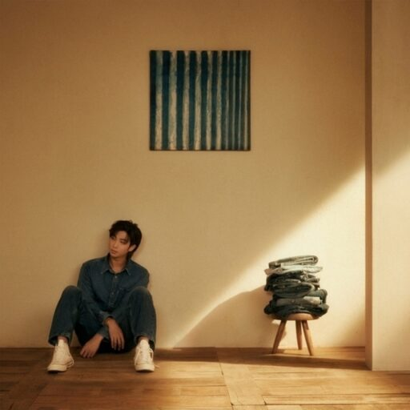

Indigo
曲の長さ
| 長さ | Full | Short |
|---|---|---|
| Wild Flower (with youjeen) | 04:33 | 01:19 |
| Still Life (with Anderson .Paak) | 02:55 | 01:08 |
| Closer (with Paul Blanco, Mahalia) | 03:17 | 01:08 |
| Forg_tful (with Kim Sawol) | 02:42 | 00:55 |
| No.2 (with Park Ji Yoon) | 03:14 | 01:49 |
曲の詳細
Wild Flower (with youjeen)
| Full | Short | 難易度 | |
|---|---|---|---|
| イージー | 413 | 115 | 2 |
| ノーマル | 753 | 209 | 6 |
| ハード | 1233 | 382 | 10 |
| スーパーハード | 413 | 115 | 2 |
Still Life (with Anderson .Paak)
| Full | Short | 難易度 | |
|---|---|---|---|
| イージー | 289 | 93 | 3 |
| ノーマル | 564 | 178 | 8 |
| ハード | 889 | 285 | 12 |
| スーパーハード | 289 | 93 | 3 |
Closer (with Paul Blanco, Mahalia)
| Full | Short | 難易度 | |
|---|---|---|---|
| イージー | 210 | 62 | 2 |
| ノーマル | 460 | 144 | 6 |
| ハード | 735 | 229 | 10 |
| スーパーハード | 210 | 62 | 2 |
Forg_tful (with Kim Sawol)
| Full | Short | 難易度 | |
|---|---|---|---|
| イージー | 286 | 90 | 1 |
| ノーマル | 450 | 139 | 3 |
| ハード | 744 | 244 | 4 |
| スーパーハード | 286 | 90 | 1 |
No.2 (with Park Ji Yoon)
| Full | Short | 難易度 | |
|---|---|---|---|
| イージー | 515 | 293 | 2 |
| ノーマル | 760 | 440 | 3 |
| ハード | 975 | 548 | 5 |
| スーパーハード | 515 | 293 | 2 |
1秒あたりのHIT数
| Full | Short | |||
|---|---|---|---|---|
| 難易度 | Hard | SH | Hard | SH |
| Wild Flower (with youjeen) | 4.5 | 6.6 | 4.8 | 6.0 |
| Still Life (with Anderson .Paak) | 5.1 | 7.1 | 4.2 | 5.7 |
| Closer (with Paul Blanco, Mahalia) | 3.7 | 5.2 | 3.4 | 4.5 |
| Forg_tful (with Kim Sawol) | 4.6 | 4.4 | ||
| No.2 (with Park Ji Yoon) | 5.0 | 5.0 |